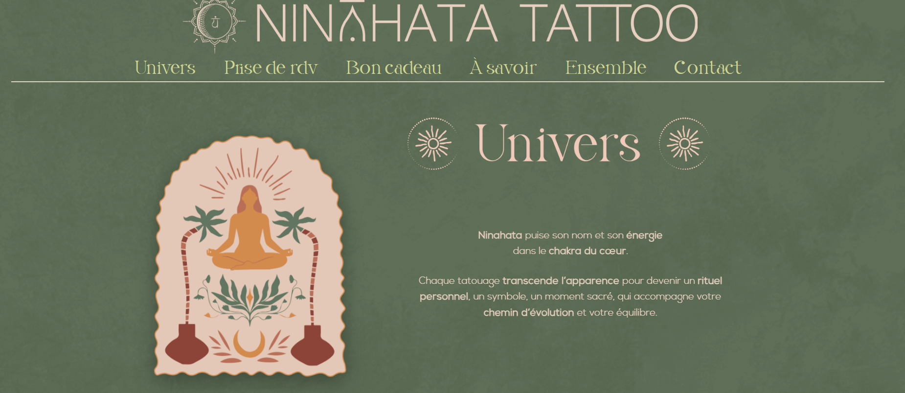
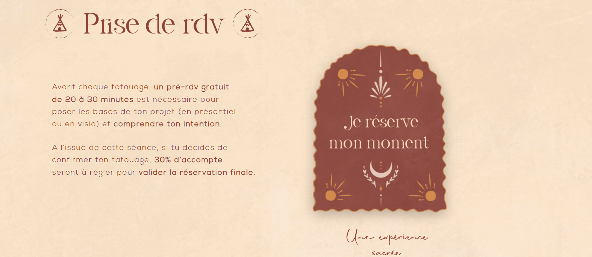
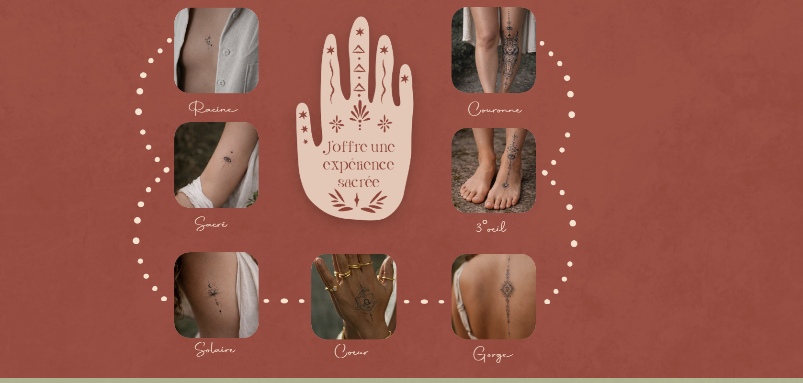
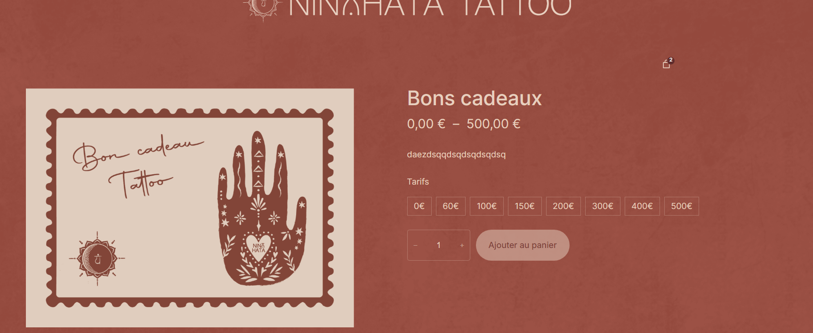
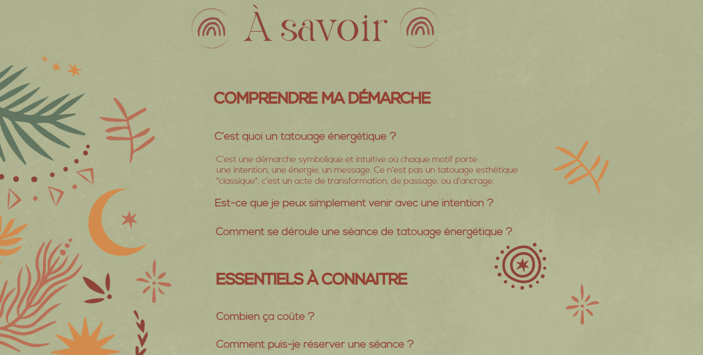
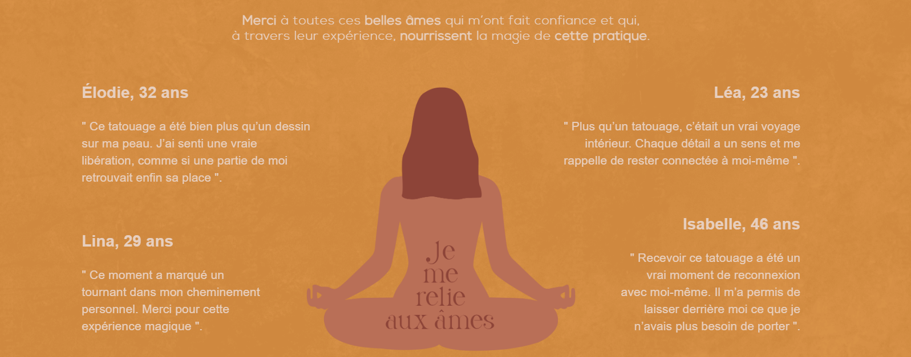

Lors de ce stage de 2ème année, on m'a confié la mission de créer l'identité numérique d'un commerce spécialisé dans le tatouage. L'objectif principal était de concevoir un site vitrine attractif intégrant une véritable solution e-commerce pour la vente de produits et la réservation de services.
Ce stage m'a permis de travailler en totale autonomie sur un projet complet, de la conception initiale à la mise en production. J'ai renforcé ma capacité à comprendre le besoin d'un client, à structurer un site e-commerce et à maîtriser des outils professionnels comme WordPress et Elementor.
Pour la réalisation de la boutique en ligne, j'ai utilisé principalement deux outils :
Elementor est un constructeur de pages intuitif pour WordPress qui permet de concevoir des sites web professionnels par glisser-déposer, sans aucune ligne de code.
WordPress est le système de gestion de contenu (CMS) le plus populaire au monde, utilisé pour créer et gérer des sites web dynamiques. Il offre une flexibilité totale.
Voici un aperçu des différentes interfaces réalisées :
Une page d'accueil inspirée par l'énergie spirituelle, qui est le thème central de ce salon de tatouage.

Cette section est dédiée à la prise de rendez-vous. Elle redirige vers la plateforme externe Calendly, permettant aux clients de réserver une séance selon les disponibilités de la tatoueuse.

Voici la section e-commerce où il est possible de commander des cartes cadeaux à offrir à ses proches.

Le client peut choisir le montant de la carte cadeau avant de procéder à l'achat.

Cette section regroupe la foire aux questions (FAQ) pour répondre aux interrogations courantes des clients.

Une section dédiée aux témoignages, mettant en avant les avis et ressentis des personnes s'étant fait tatouer.
